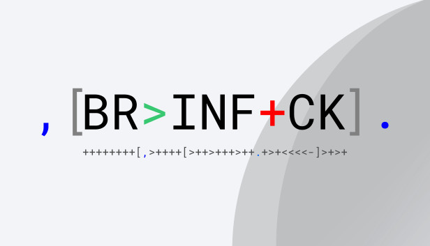
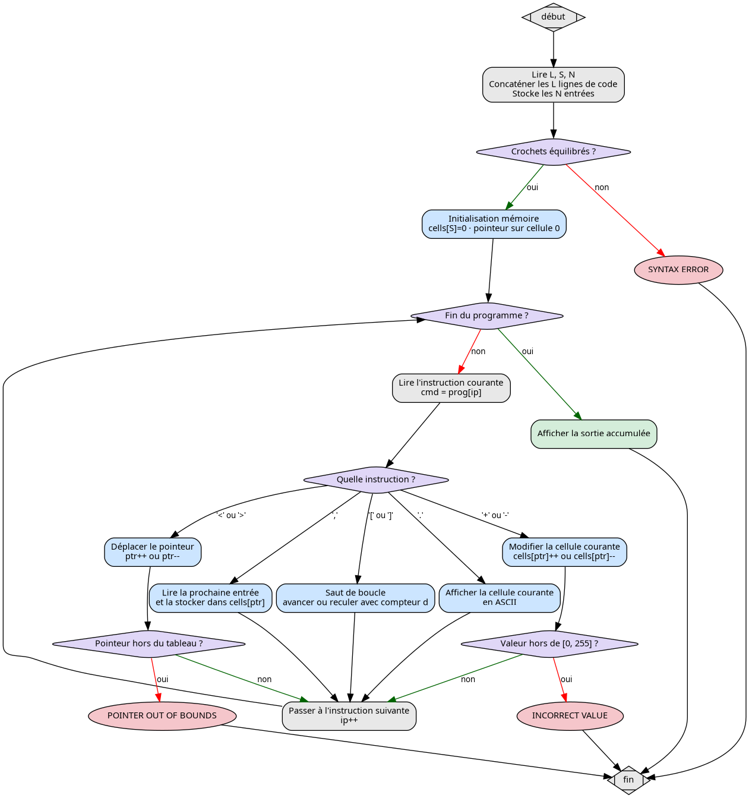

Rapport - Brainfuck Interpreter
Table des matières
Lien vers l’exercice sur Coding Games

1. Introduction
Brainfuck est un langage de programmation minimaliste avec seulement 8 instruction. Malgrés ça, il est Turing-complet : tout ce qu’un ordinateur ordinaire peut calculer, Brainfuck peut le calculer aussi.
L’execution repose sur trois éléments :
- Un tableau de
Scellules d’un octet chacune, initialisées à 0. - Un pointeur initialisée sur la cellule d’indice 0.
- Un programme composé des 8 instructions valides.
| Instruction | Effet |
|---|---|
| => | Déplace le pointeur vers la droite |
< |
Déplace le pointeur vers la gauche |
+ |
Incrémente la valeur de la cellule courante |
- |
Décrémente la valeur de la cellule courante |
. |
Affiche la valeur courante comme caractere ASCII |
, |
Lis un entier en entrée et le stocke dans la cellule courante |
[ |
Saute après le ] correspondant si la cellule courante vaut 0 |
] |
Retourne après le [ correspondant si la cellule courante est non nulle |
Tout caractères qui ne fait pas partie de ces 8 symboles est simplement ignoré ,ce qui permet de commenter le code Brainfuck librement.
2. Analyse du problème
2.1. Structure de l’entrée
La première ligne contient trois entiers :
L: le nombre de lignes de code sourceS: la taille du tableau mémoireN: le nombre de valeurs d’entrée pour l’instruction,
Puis L lignes de code Brainfuck, puis N entiers représentant les entrées.
2.2. Gestion des erreurs
| Erreur | Condition | Moment |
|---|---|---|
SYNTAX ERROR |
Crochet [ sans ] correspondant, ou vice-versa |
Avant exécution |
POINTER OUT OF BOUNDS |
Pointeur < 0 ou ≥ S | À l’exécution |
INCORRECT VALUE |
Valeur d’une cellule < 0 ou > 255 | À l’exécution |
2.3. La difficulté principale : les crochets imbriqués
Un [ doit retrouver son ] correspondant en tenant compte de l’imbrication.
Dans [[]] par exemple, le premier [ correspond au dernier ], pas au
deuxième. Il faut donc un compteur de profondeur pour trouver le bon
homologue, et pas juste le premier qu’on rencontre.
3. Méthode de résolution

La vérification syntaxique repose sur un simple compteur de profondeur. On
parcourt le programme une première fois : chaque [ incrémente le compteur,
chaque ] le décrémente. Si le compteur passe sous zéro, c’est qu’on a un
] sans [ précédent. S’il n’est pas retombé à zéro à la fin, des [ n’ont
pas été fermés. Dans les deux cas : SYNTAX ERROR.
Pour les sauts [ et ], on applique le même principe à l’exécution, mais
cette fois en avançant ou en reculant dans le programme jusqu’à ce que le
compteur retombe à zéro, ce qui garantit de tomber sur le bon crochet même
en cas d’imbrication.
4. Code commenté
#include <stdlib.h> #include <stdio.h> #include <string.h> #include <stdbool.h> int main() { int L, S, N; /* L = nombre de lignes de code, S = taille mémoire, N = nombre d'entrées */ scanf("%d%d%d", &L, &S, &N); fgetc(stdin); /* consomme le '\n' laissé par scanf pour ne pas bloquer la lecture suivante */ /* --- Lecture du programme Brainfuck --- */ /* Le code est réparti sur L lignes, on les colle bout à bout en une seule chaîne */ char prog[L * 1025 + 1]; prog[0] = '\0'; for (int i = 0; i < L; i++) { char r[1025] = ""; scanf("%[^\n]", r); /* lit toute la ligne sauf le '\n' */ fgetc(stdin); /* consomme le '\n' */ strcat(prog, r); /* ajoute la ligne au programme */ } /* --- Lecture des valeurs d'entrée (utilisées par l'instruction ',') --- */ int inputs[N]; for (int i = 0; i < N; i++) scanf("%d", &inputs[i]); int plen = strlen(prog); /* longueur totale du programme */ /* --- Vérification syntaxique AVANT toute exécution --- */ /* On parcourt le programme et on compte les crochets ouverts/fermés. * Si depth passe sous 0 : un ']' sans '[' précédent. * Si depth != 0 à la fin : des '[' non fermés. */ int depth = 0; for (int i = 0; i < plen; i++) { if (prog[i] == '[') depth++; else if (prog[i] == ']') depth--; if (depth < 0) { printf("SYNTAX ERROR\n"); return 0; } } if (depth != 0) { printf("SYNTAX ERROR\n"); return 0; } /* --- Initialisation de la mémoire Brainfuck --- */ /* S cellules, toutes à 0 au départ */ int cells[S]; memset(cells, 0, sizeof(int) * S); int ptr = 0; /* pointeur mémoire : indice de la cellule courante */ int ip = 0; /* pointeur d'instruction : position dans prog[] */ int inp = 0; /* index de la prochaine valeur à lire dans inputs[] */ /* Buffer de sortie : on accumule les caractères avant d'afficher */ char output[100000]; int out_len = 0; /* --- Boucle principale d'interprétation --- */ while (ip < plen) { char cmd = prog[ip]; /* instruction courante */ if (cmd == '>') { /* Déplace le pointeur d'une cellule vers la droite */ ptr++; if (ptr >= S) { printf("POINTER OUT OF BOUNDS\n"); return 0; } } else if (cmd == '<') { /* Déplace le pointeur d'une cellule vers la gauche */ ptr--; if (ptr < 0) { printf("POINTER OUT OF BOUNDS\n"); return 0; } } else if (cmd == '+') { /* Incrémente la valeur de la cellule courante */ cells[ptr]++; if (cells[ptr] > 255) { printf("INCORRECT VALUE\n"); return 0; } } else if (cmd == '-') { /* Décrémente la valeur de la cellule courante */ cells[ptr]--; if (cells[ptr] < 0) { printf("INCORRECT VALUE\n"); return 0; } } else if (cmd == '.') { /* Affiche la cellule courante comme caractère ASCII */ output[out_len++] = (char)cells[ptr]; } else if (cmd == ',') { /* Stocke la prochaine valeur d'entrée dans la cellule courante. * Si toutes les entrées ont déjà été consommées, on met 0. */ cells[ptr] = (inp < N) ? inputs[inp++] : 0; } else if (cmd == '[') { /* Si la cellule courante vaut 0, on saute après le ']' correspondant. * Le compteur d = 1 gère l'imbrication : on avance jusqu'à ce que * tous les '[' ouverts en chemin aient été refermés (d revient à 0). */ if (cells[ptr] == 0) { int d = 1; while (d > 0) { ip++; if (prog[ip] == '[') d++; else if (prog[ip] == ']') d--; } /* ip est maintenant sur le ']' correspondant */ } } else if (cmd == ']') { /* Si la cellule courante est non nulle, on retourne après le '[' correspondant. * Même principe qu'au-dessus mais en reculant dans le programme. */ if (cells[ptr] != 0) { int d = 1; while (d > 0) { ip--; if (prog[ip] == ']') d++; else if (prog[ip] == '[') d--; } /* ip est maintenant sur le '[' correspondant */ } } /* Tout autre caractère est ignoré (commentaires Brainfuck) */ ip++; /* passe à l'instruction suivante */ } /* --- Affichage de la sortie accumulée --- */ output[out_len] = '\0'; printf("%s\n", output); return 0; }
5. Exemples de programmes Brainfuck
5.1. Hello World
++++++++[>++++[>++>+++>+++>+<<<<-]>+>+>->>+[<]<-] >>.>---.+++++++..+++.>>.<-.<.+++.------.--------.>>+.>++.
Sortie : Hello World!
Des boucles imbriquées construisent les valeurs ASCII lettre par lettre. Par exemple, H vaut 72 : on calcule 8×9 avec des boucles plutôt que de faire 72 fois +.
5.2. Afficher un caractère simple
+++++++++++++++++++++++++++++++++++++++++++++++++++++++++++++++++++++.
Sortie : A (ASCII 65)
On incrémente 65 fois la cellule 0 puis on affiche.
5.3. Doubler la valeur d’entrée
,[->++<]>.
La boucle [->++<] décrémente cells[0] et incrémente cells[1] de 2 à chaque
tour. À la fin, cells[1] vaut 2n.
5.4. Addition de deux entrées
,>,[-<+>]<.
La boucle transfère la valeur de cells[1] vers cells[0] en les additionnant.
6. Solution alternative - PewPewBewn
La solution de PewPewBewn prend une approche complètement différente : au lieu d’interpréter le Brainfuck instruction par instruction comme on le fait, elle le compile directement.
#include <sys/mman.h> #include <stdio.h> #include <string.h> #include <stdlib.h> typedef unsigned char u8; typedef unsigned int u32; static u8 *EXECUTE; static u8 bin[1 << 22]; /* Émet un octet dans le buffer de code machine */ #define EMIT(x) (*ptr++ = (x)) /* Émet une valeur 32 bits (little-endian) */ static void emit32(u8 **p, u32 v) { (*p)[0] = v & 0xFF; (*p)[1] = (v >> 8) & 0xFF; (*p)[2] = (v >> 16) & 0xFF; (*p)[3] = (v >> 24) & 0xFF; *p += 4; } void COMPILE(const char *bf, int S, int N) { u8 *ptr = bin; u8 *stack[1024]; int sp = 0; /* Header : sauvegarde des registres + initialisation * r12 = base du tableau mémoire, rdx = pointeur courant (=0) * r13 = entrées, r14/r15 = buffer de sortie */ u8 header[] = { 0x41,0x54, 0x41,0x55, 0x41,0x56, 0x41,0x57, /* push r12-r15 */ 0x53, /* push rbx */ 0x49,0x89,0xFC, /* mov r12, rdi */ 0x31,0xD2, /* xor edx, edx */ 0x49,0x89,0xF5, /* mov r13, rsi */ 0x4D,0x89,0xC7, /* mov r15, r8 */ 0x4D,0x89,0xC6, /* mov r14, r8 */ }; memcpy(ptr, header, sizeof(header)); ptr += sizeof(header); /* Parcours du programme Brainfuck et émission du code x86 */ for (; *bf; bf++) { switch (*bf) { case '+': /* add BYTE PTR [r12+rdx], 1 */ EMIT(0x41); EMIT(0x80); EMIT(0x04); EMIT(0x14); EMIT(0x01); break; case '-': /* sub BYTE PTR [r12+rdx], 1 */ EMIT(0x41); EMIT(0x80); EMIT(0x2C); EMIT(0x14); EMIT(0x01); break; case '>': /* inc rdx */ EMIT(0x48); EMIT(0xFF); EMIT(0xC2); break; case '<': /* dec rdx */ EMIT(0x48); EMIT(0xFF); EMIT(0xCA); break; case '.': /* mov [r14], BYTE PTR [r12+rdx] ; inc r14 */ EMIT(0x43); EMIT(0x8A); EMIT(0x04); EMIT(0x14); EMIT(0x41); EMIT(0x88); EMIT(0x06); EMIT(0x49); EMIT(0xFF); EMIT(0xC6); break; case '[': /* cmp BYTE PTR [r12+rdx], 0 ; je (adresse à remplir plus tard) */ EMIT(0x41); EMIT(0x80); EMIT(0x3C); EMIT(0x14); EMIT(0x00); EMIT(0x0F); EMIT(0x84); stack[sp++] = ptr; /* on sauvegarde la position pour patcher */ ptr += 4; /* réserve 4 octets pour l'adresse de saut */ break; case ']': /* Patch du '[' correspondant avec l'adresse courante */ { u8 *open = stack[--sp]; u32 fwd = (u32)(ptr - open - 4 + 5); emit32(&open, fwd); /* jmp retour */ EMIT(0xE9); emit32(&ptr, (u32)(open - ptr - 4 - 5)); } break; } } /* Épilogue : écriture du buffer de sortie + ret */ u8 footer[] = { 0x5B, 0x41,0x5F, 0x41,0x5E, 0x41,0x5D, 0x41,0x5C, 0xC3 }; memcpy(ptr, footer, sizeof(footer)); ptr += sizeof(footer); /* Copie dans une zone mémoire exécutable */ EXECUTE = mmap(0, sizeof(bin), PROT_READ|PROT_WRITE|PROT_EXEC, MAP_PRIVATE|MAP_ANONYMOUS, -1, 0); memcpy(EXECUTE, bin, ptr - bin); }
Au lieu d’interpréter le Brainfuck instruction par instruction comme on le
fait, PewPewBewn le traduit directement comme du vrai code machine, en le compilant directement et en allouant la
mémoire avec mmap(PROT_EXEC) . En plus, les séquences
répétées comme ++++ sont fusionnés en une seule instruction, ce qu’on ne
fait pas du tout. C’est ~350 lignes contre ~80 pour nous. Impressionnant, mais clairement BEAUCOUP trop pour du Braifuck.
7. Bilan
Cet exercice était moins compliqué algorithmiquement que les précedents, mais il permet de comprendre ce qu’est un interpréteur. Le point clef à retenir est le compteur de profondeur pour la gestion des crochet, en prenant bien en compte l’imbrication. La solution JIT de PewPewBewn était intéressante à analyser même si pas mal de détails dépassent mes connaissances .